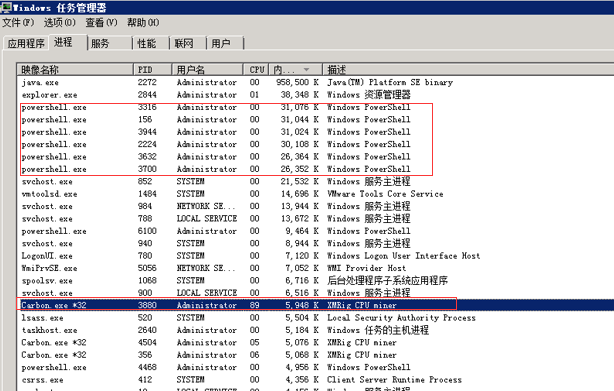

第5篇：挖矿病毒（一）
0x00 前言
随着虚拟货币的疯狂炒作，挖矿病毒已经成为不法分子利用最为频繁的攻击方式之一。病毒传播者可以利用个人电脑或服务器进行挖矿，具体现象为电脑CPU占用率高，C盘可使用空间骤降，电脑温度升高，风扇噪声增大等问题。
0x01 应急场景
某天上午重启服务器的时候，发现程序启动很慢，打开任务管理器，发现cpu被占用接近100%，服务器资源占用严重。

0x02 事件分析
登录网站服务器进行排查，发现多个异常进程：

分析进程参数：
wmic process get caption,commandline /value >> tmp.txt

TIPS:
在windows下查看某个运行程序（或进程）的命令行参数
使用下面的命令：
wmic process get caption,commandline /value
如果想查询某一个进程的命令行参数，使用下列方式：
wmic process where caption=”svchost.exe” get caption,commandline /value
这样就可以得到进程的可执行文件位置等信息。
访问该链接：

Temp目录下发现Carbon、run.bat挖矿程序:

具体技术分析细节详见：
360CERT：利用WebLogic漏洞挖矿事件分析
清除挖矿病毒：关闭异常进程、删除c盘temp目录下挖矿程序 。
临时防护方案
根据实际环境路径，删除WebLogic程序下列war包及目录
rm -f /home/WebLogic/Oracle/Middleware/wlserver_10.3/server/lib/wls-wsat.war
rm -f /home/WebLogic/Oracle/Middleware/user_projects/domains/base_domain/servers/AdminServer/tmp/.internal/wls-wsat.war
rm -rf /home/WebLogic/Oracle/Middleware/user_projects/domains/base_domain/servers/AdminServer/tmp/_WL_internal/wls-wsat
重启WebLogic或系统后，确认以下链接访问是否为404
0x04 防范措施
新的挖矿攻击展现出了类似蠕虫的行为，并结合了高级攻击技术，以增加对目标服务器感染的成功率。通过利用永恒之蓝（EternalBlue）、web攻击多种漏洞，如Tomcat弱口令攻击、Weblogic WLS组件漏洞、Jboss反序列化漏洞，Struts2远程命令执行等，导致大量服务器被感染挖矿程序的现象 。总结了几种预防措施：
1、安装安全软件并升级病毒库，定期全盘扫描，保持实时防护
2、及时更新 Windows安全补丁，开启防火墙临时关闭端口
3、及时更新web漏洞补丁，升级web组件